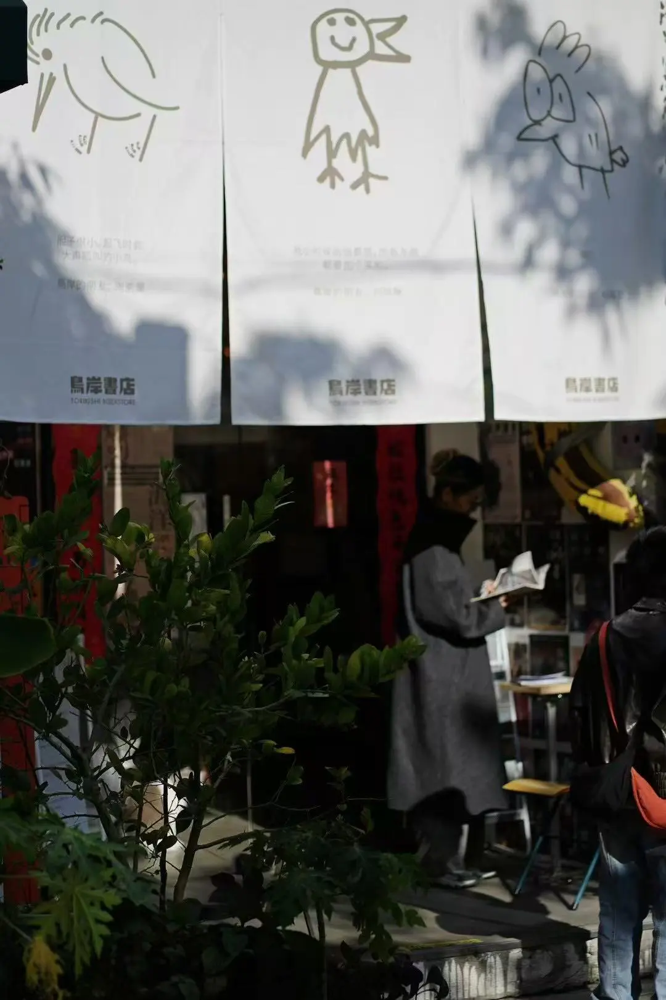
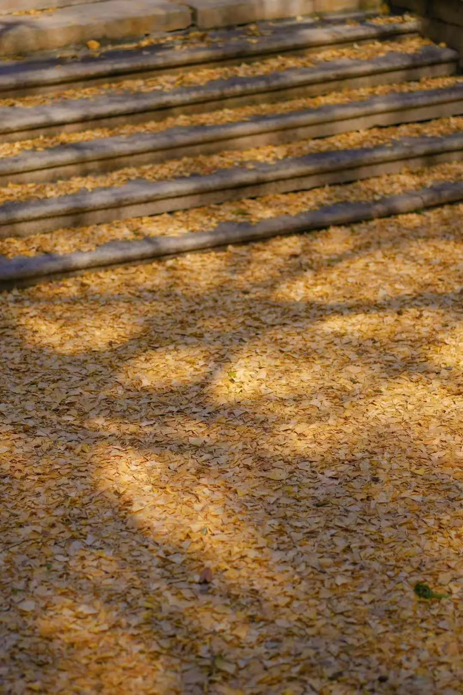

2025 年 1 月 26 日，我从上海高铁出发，老弟从杭州开车出发，在嘉兴接上老妈老爸。在嘉兴南站等了大概 50 分钟，终于上了老弟的车，开始蛇年春节的南方自驾游。这是我们一家四口，第一次整整齐齐在春节出游远方，老弟负责开车，我负责行程攻略。
老坟
路途中，在老家待了半年的老妈在黑色羽绒服的领口里，围着一个花花绿绿的丝巾，向我们讲述街坊亲戚的家长里短。
她说着，分居两地的谁家媳妇儿回了老家过年，不知道是不是复合了；又说起，谁前段时间在茯苓的收获时期，去帮亲戚家切茯苓的时候，意外切断了四根手指，后来又接上了；还提到，谁家儿子在竖广告牌时，被掉落的牌子砸到了腿，粉碎性骨折，现在得坐着轮椅，他家真的很倒霉，父亲得了癌症，儿子坐了轮椅。说到这里，老爸插了一句，他们家祖坟位置不好，要重新藏棺。大概意思是，老坟太低洼，儿孙触霉头…
听着老妈念叨的这些事儿，细细数来有近十件之多，可其中竟没有一件让人感到喜悦啊。
「我们的亲友圈就没有谁家有点什么好事儿可以分享吗？像是谁高升、谁置业、谁的喜乐事儿？」
「没有，顶多就是谁结婚怀孕了。」
「这也不一定是好事儿。」
在所有这些讲述、情绪、惊诧中，好像用一个词就可以概括：悲剧。还真是「好事不出门，坏事传千里」？
我尝试去理解这种情况，更宁愿相信这一切并非简单的倒霉可以解释，而是背后有着复杂的结构性因素。比如，Ta 们大多从事高风险的体力劳动，工作环境缺乏完善的安全管理制度，意外随时可能发生。长期不健康的生活习惯，加上低质量的生活环境，也让疾病与伤痛更容易找上门。这一切，绝不是祖坟位置的改变就能扭转的。
大概是因为这几年读了一点人类学，对家乡的认知不再那么单一刻板，比以前多理解了一些祭祀的意义。在农村父权父系的环境里，个体依靠繁衍后代获得精神上的永生，超越肉体的短暂存在。光宗耀祖、延续香火的观念，以及祖先崇拜、保佑后代的仪式习俗，赋予了个体世俗生活以神圣感，让人们相信，即便肉体消逝，也能通过子孙的祭祀继续存在。
即使老妈老爸进入城市参与现代化分工，在远郊的小工厂中干了十年，但是 Ta 们好像始终没有真正融入都市生活，交际圈未因职业而扩大，依然深深嵌入在农村生活网络之中，生活方式与听闻见解都可以体现这一点…
如果改了老坟的方位，就能改变一家人的霉运，那也是好的。不失为一种希望吧。
安全
一路南下，途经温州，逛了老街，又到霞浦，看了金色落日，然后到福州停留一日，吃一顿闽味年夜饭。
这半途中，我逐日加深的一个观察便是——老妈老爸对于商业社会的运转逻辑与规则，已然愈发陌生，仿佛置身于一个陌生的世界，各种精细化的事物让 Ta 们不自觉地畏缩。
就拿在霞浦住民宿洗澡这件事来说，老妈在浴室里叫嚷着水太烫，根本没法洗。我赶忙走进淋浴间查看，只见那淋浴器的温度调节处，用了一个温度计图案作为标识。老妈没能理解这其实是在表明水温可以通过扭动调节，瞬间便陷入了慌乱与愠怒之中。
后来到了福州的酒店，老妈又找不到异形盒子里的牙刷套装，那盒子明明就那么显眼地摆在洗漱台上。只因她从未见过、不熟悉，所以根本想不到这个小盒子是可以打开的。
除此之外，我还留意到，Ta 们坐在餐厅里，总是缩着脖子，耸着肩膀吃饭。行程过半，吃了很多顿饭，我一次又一次地提醒他们，别再缩着脖子了，Ta 们也确实能够做出改变，短暂地舒展开头颈。
这让我意识到，老妈老爸在外面的世界里，实际上处于一种不安全感之中。这种略显畏缩的姿态，是不适感、不安全感的躯体化反应。旅途中无数的细节，让 Ta 们感到不适、局促，自然难以舒展开来。
进入2025年，我对生活的愿望改变了，我不再希望可以做个从容的人，而是希望自己做个舒展的人，过舒展的生活。但是我能让老妈老爸也同样舒展吗？让 Ta 们舒展开的条件是什么？
一是要有舒适的生活环境。这意味着我需要在 Ta 们有社交网络的地方提供一个舒适住房，可以选择的实现方式是把老家的屋子重新修正一下，把过去将就着不去装修的地方修整换新，或者在我们之间都方便长期生活的城市重新购置一个房产。二是要让 Ta 们熟悉现代城市的运行规则，这意味着要么带 Ta 们一起长期生活在城市里，付出的代价是大量情绪劳动，要么由 Ta 们生活在老家，假期相聚时尽力维持平和融洽，接受课题分离。三是我和弟弟要努力承担 Ta 们的舒适养老生活成本，这意味着我需要有持续的高收入，在构建自己的生活基础的同时，多为父母积蓄一些。
还不用全部严密分析，就可以知道，更完善美好的方案对我来说是很高的成本。我的能力，职业发展，志与愿，都还不能支撑自己当下就完全实现这种想法。想到这里，我只能把思绪放在努力工作，多攒钱，同时尝试课题分离的念头上。我和弟弟后期选择在哪里 settle down 也影响着这些想法的选择，以及落于实践的时间和成本。因此，结合父母的需求与我们的实际条件，从长计议，大概在2-3年左右会有更具体的进展吧。
走仔
准备出发去泉州，在福州的酒店前台领取行李时，老弟直直地站在母亲身后，我撇了他一眼，看到他完全没有主动上前，从服务员手里接过行李的意思，我瞬间气不打一处来。
我情绪上头，抱怨着，要儿子有什么用呢？情绪价值没有给到，力气活也不主动干，生儿子还不如女儿。老妈老爸在后座哑口无言。其实我心里知道，要儿子有什么用？在上一辈的观念里就是要他「传宗接代，接续香火」呗。

一路沉默着到了泉州，我们分头行动，让老弟带老妈老爸去古城逛逛，我来鸟岸书店坐坐。这家以人文社科书籍为主的独立书店，办过很多活动，就像一个在泰坦尼克号上跳舞的人。在店门口的港台+马华文学区域，翻了一本黄守县的《走仔》。在潮汕话里，「走仔」是女儿的意思。单独看，「走」是跑的意思，「仔」是儿子的意思，合起来，女儿就成了会跑出去的儿子。传统观念之女儿养大了是要去别人家的。令人无语。有时候，我会想，自己为家人展开的考虑——是不是多余？我需要这样考虑吗？我既想要自己的独立，又想要改善或带动全家，是我想要的太多吗？
现在，我更务实了点，知道自己缺乏带动全家走向更好生活的强大能力与充分条件，这里的「更好」，既包括物质层面的富足，也涵盖知识层面的提升。在我的能力范畴内，仅能实现的是前者轻微程度的改善，后者往往是油盐不进的抵触。
什么样的人，能带动家庭，乃至家族过得更好呢？
我跟老妈老爸分享了上学期 MBA 课程最后一门《证券投资分析》老师的经历，他是七八十年代的大学生，后来在厦门大学读博，从高校转行进入了证券行业，关于转行的这个转变，他说那时候高校的收入不算低，足以养活一个小家庭，但是对于大家族来说是力不从心的，后来成了证券公司的董事长，家族里的侄女侄子等晚辈读大学的费用都是他承担。我说，这对于那个大家族来说，便是一个族长式人物了吧。
如果将目光投向自己身边的大家族，就发现，确实也不曾出现一个族长式的人物。哪怕是涉及到远亲，上一辈稍微混得好一点的，也仅仅只能达到改善小家庭生活条件的地步，难以带动他的大家族。那为数不多受了高等教育的长辈亲戚，实现了小富即安的生活，远远称不上知识分子，故而也没有发挥榜样的带动作用。大家族的视野，也并未受到扩展或一些积极的影响。我们绝大部分人，从事替代性极强的劳碌工种，小康生活，不敢轻易停下工作。年轻一辈中的孩子，也对考研或更大的事情有着失败焦虑与不自信，不曾尝试遥不可及的探索。
如果从功利的视角来看，我们大多数人难以用更长远的眼光去做决策，缺少成功的参照，也缺少失败的底气。不曾见过蝴蝶，自然无法想象轻盈起舞的肆意人生。如果从相反的视角来看，如果可以实现普通而幸福的生活，那也是很不错的体验。不一定肆意，但可以安宁平和。
只是需要自己懂得少些攀比与面子焦虑，从真实的舒适与内心愉悦出发，尊重人作为「人」的选择——这是我们这个小家庭的俩年轻人与上一辈俩人之间还难以调和的矛盾所在。
结语
虽然争执了两三场，我秉持着绝不沉默的原则，或表达，或发飙，但是我们一家基本都保持着没有隔夜仇，很快就能转换话题，恢复和平的习惯。整个旅程很顺利，没有意外发生，偶尔有行程变动，但都不算大碍。
一路向南，日愈温暖。还吃了美味的各种海鲜、土笋冻、姜母鸭、芋头饼、腌芭乐，看了汹涌澎湃的海与细软的沙滩。

福州满城的古榕树，石厝教堂前古银杏的黄金叶洒落满地，泉州充满历史想象的村落古建，偏居河岸的书店，是这一路我最喜欢的记忆。